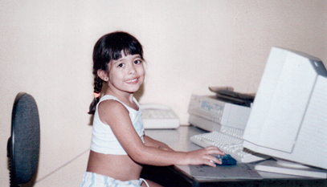
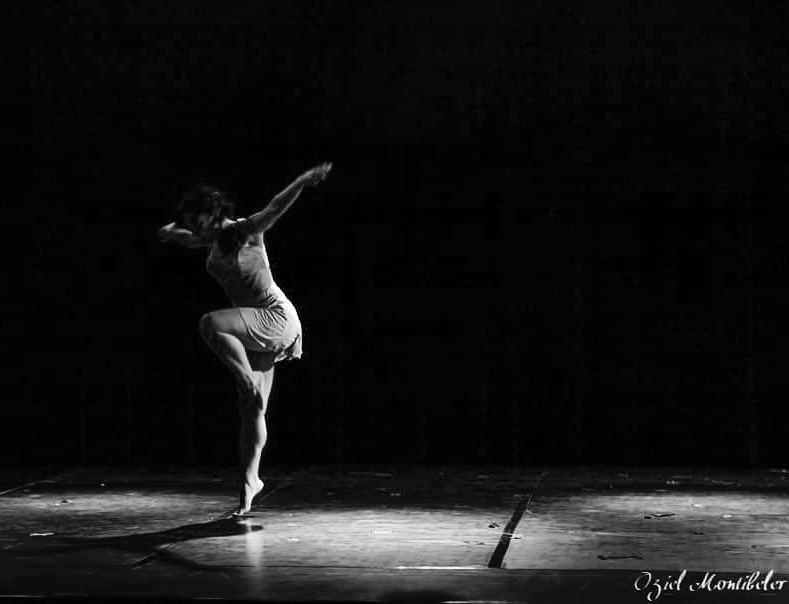
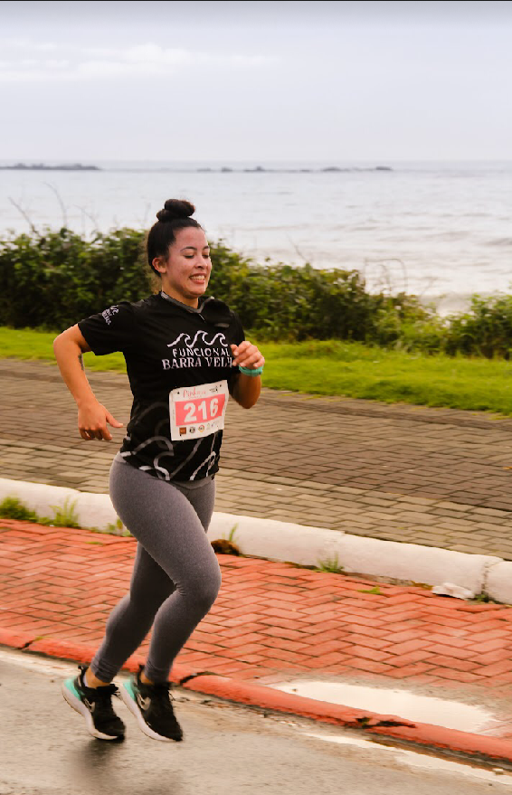
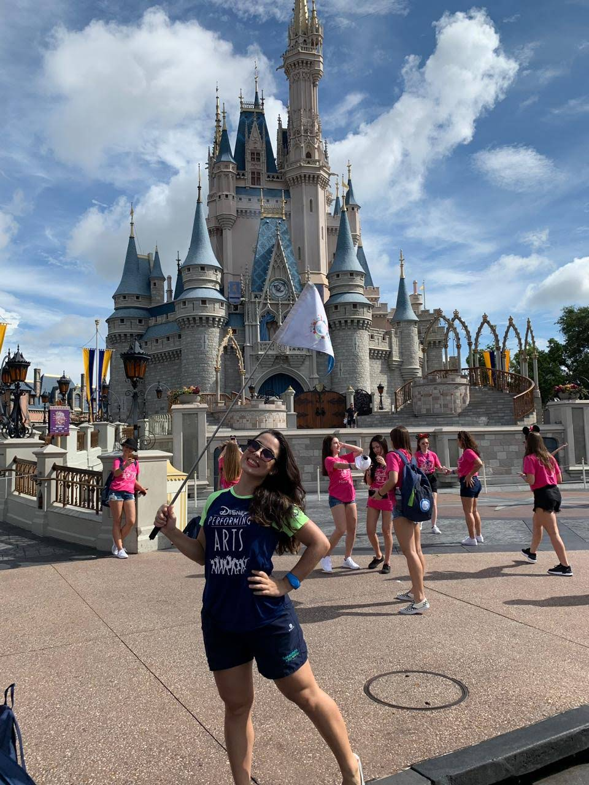
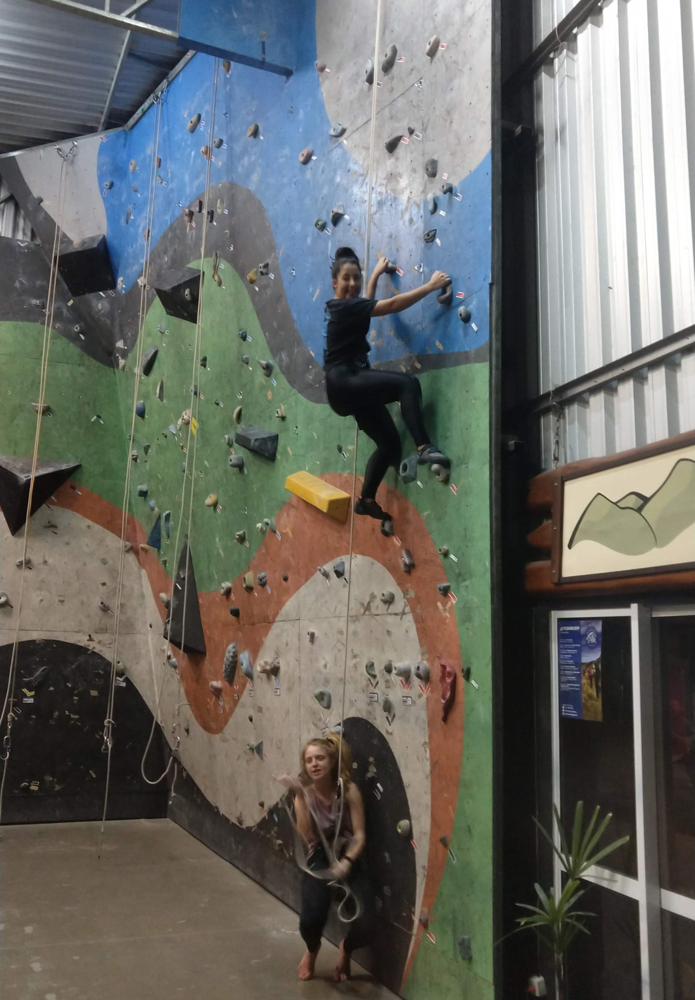
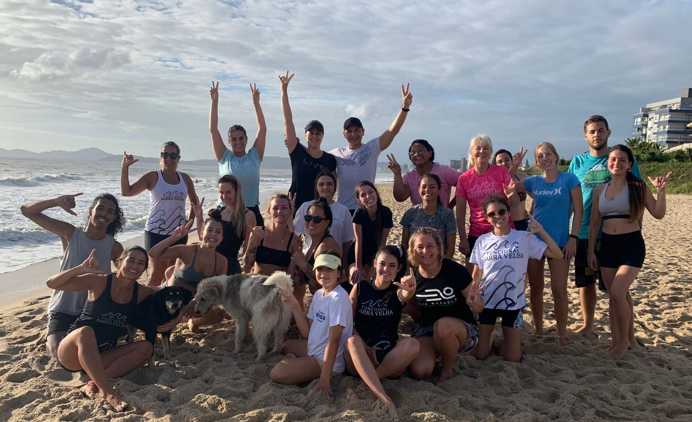
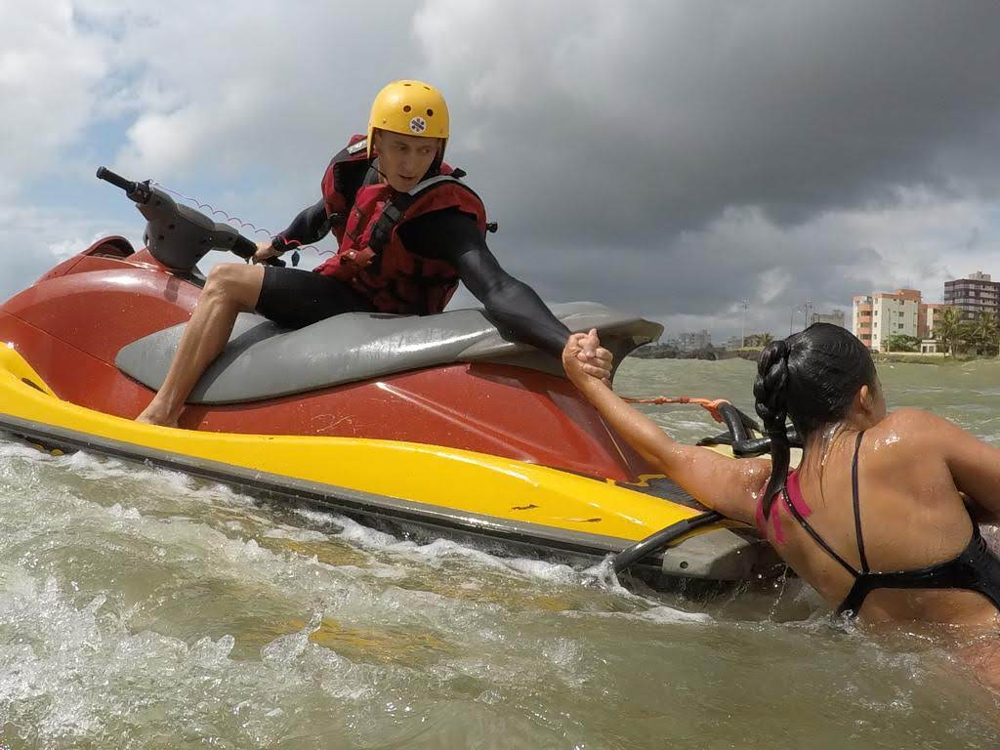
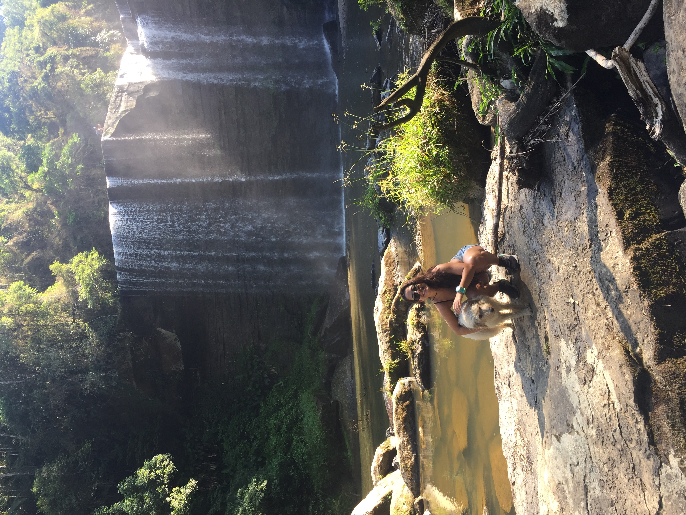
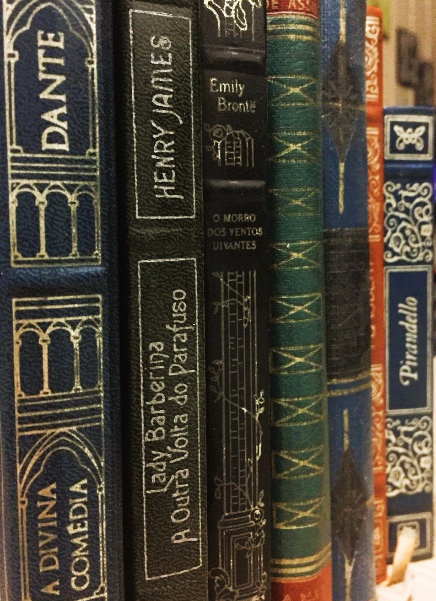
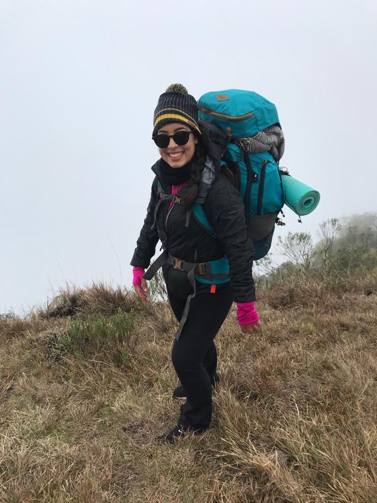

SOBRE MIM:
Nascida na década de 90, junto com grandes inovações tecnológicas, sempre tive facilidade para lidar com tecnologia. Ainda adolescente, muito focada e decidida, aos 15 comecei a trabalhar em troca de bolsa de estudo e nunca mais parei. Aos 25 anos e com muitas experiências diferentes e enriquecedoras, decidi retornar aos estudos e ao 'assunto' que sempre me interessou. Hoje, busco aprendizado, novas experiências e principalmente: novos modelos de trabalho e empresas com visões parecidas com as minhas para o futuro!
Aqui estão alguns dos
que finalizei em diferentes cursos!
10 FATOS SOBRE MIM:
|  Sempre tive afinidade com computadores... |  Já fui bailarina profissional e professora de dança! | ||||
|  Sou uma entusiasta dos esportes; |  Já trabalhei como intérprete/guia nos Estados Unidos; |  Tenho a habilidade de aprender rápido, geralmente observando; | |||
|  Tenho facilidade para me comunicar e gosto de estar em grupos; |  Já trabalhei como voluntária - Guarda Vidas Civil - junto aos Bombeiros de SC; | ||||
|  Gosto de estar em contato com a natureza; |  Apesar de gostar do mundo digital, os livros prefiro físicos - tenho uma coleção deles! |  Estou sempre pronta para novas aventuras! |